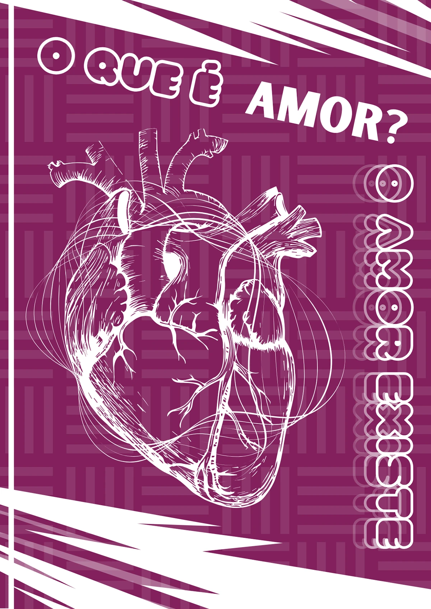
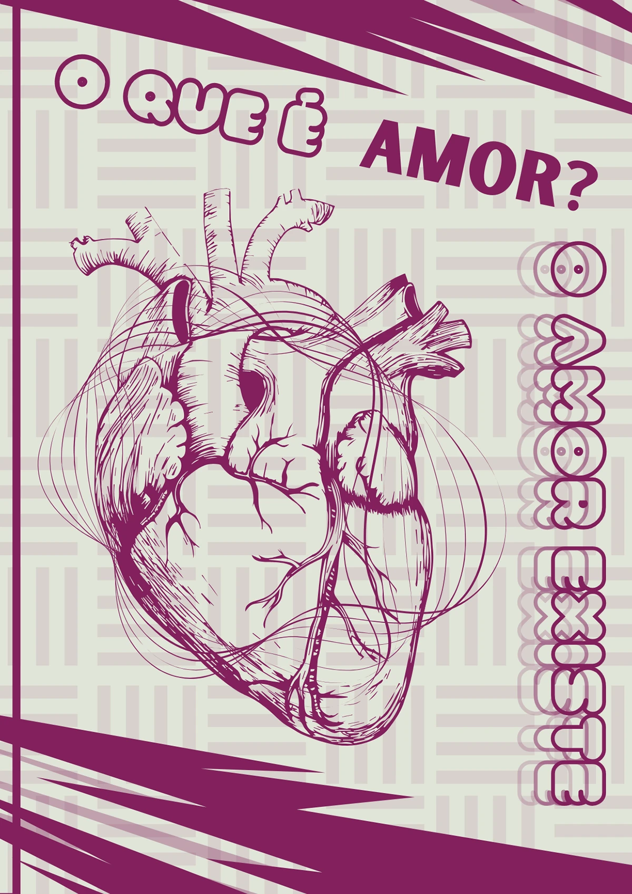
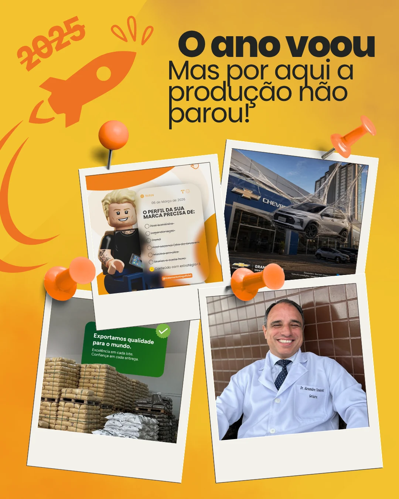
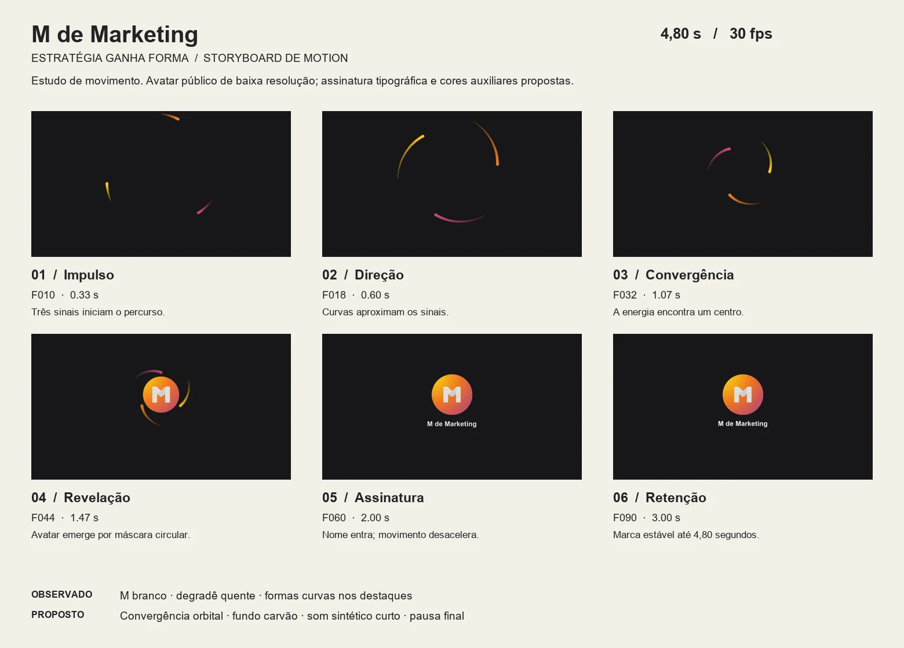
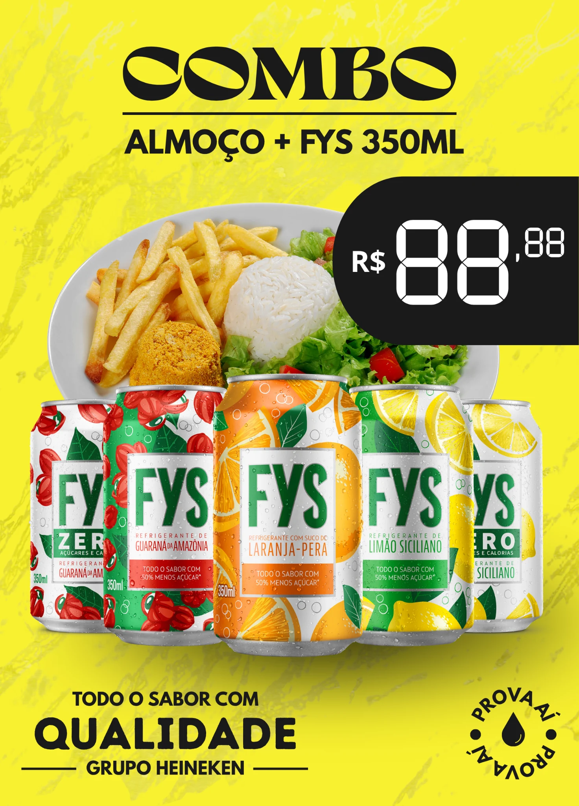

O que é amor?
Estudo de contraste, ilustração e tipografia expressiva.
04 / Direção de arte / Design gráfico
Uma seleção de peças independentes — campanhas, estudos visuais e experimentos que exploram composição, tipografia, cor e direção de arte.
Direção de arte · Design gráfico · Composição
Peças isoladas. Linguagens diferentes. O mesmo cuidado com ideia, ritmo e acabamento.



Estudo de contraste, ilustração e tipografia expressiva.

A mesma estrutura visual em uma inversão de atmosfera.

Peça estática da linguagem visual que antecede o estudo de movimento.
Movimento de convergência que conduz os sinais até a assinatura da marca.

Impulso, direção, convergência, revelação, assinatura e retenção organizados antes da animação.
Oferta em primeiro plano
Uma peça promocional guiada por impacto imediato: produto, preço e contraste organizados para leitura rápida sem perder presença de marca.

Informação densa transformada em hierarquia visual, atmosfera e objeto de jogo.